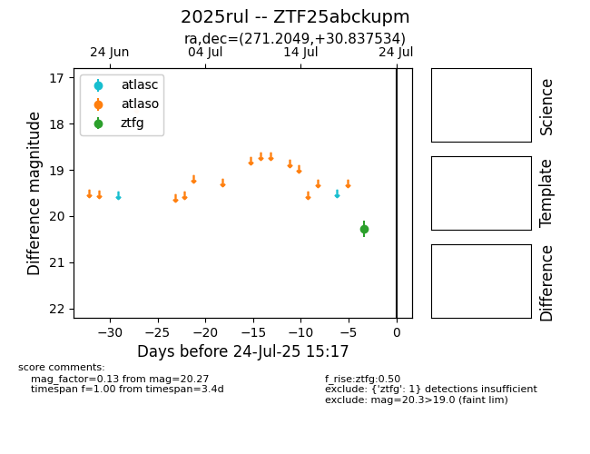

Target 2025rul at 2025-07-24 15:17, see:
FINK: fink-portal.org/2025rul
Lasair: lasair-ztf.lsst.ac.uk/objects/2025rul
ALeRCE: alerce.online/object/2025rul
TNS: wis-tns.org/object/2025rul
YSE: ziggy.ucolick.org/yse/transient_detail/2025rul
alt names
ZTF25abckupm (ztf,fink)
2025rul (tns,yse)
coordinates:
equatorial (ra, dec) = (271.2049,+30.83753)
galactic (l, b) = (57.0863,+22.83695)
photometry
last ztfg=20.27
1 ztfg detections
